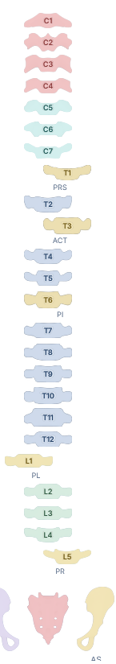

Historia clínica que entiende la columna
Registrá ajustes, técnicas y notas por segmento para seguir la evolución del paciente consulta a consulta.
C5T3T7L4
Gestioná turnos, pacientes y cada ajuste desde una plataforma diseñada específicamente para la práctica quiropráctica.
Registro de ajustes vertebrales del paciente.

QuiroNexus reúne agenda, pacientes, consultas y ajustes para que toda la información de tu práctica esté conectada y siempre disponible.
Registrá ajustes, técnicas y notas por segmento para seguir la evolución del paciente consulta a consulta.
Turnos, disponibilidad y organización del consultorio desde una agenda clara y rápida de usar.
Gestioná pacientes, profesionales y permisos desde un mismo espacio, tanto si trabajás solo como en equipo.
Cargá y editá imágenes del paciente. Anotá, trazá líneas y trabajá sobre la imagen sin salir de la ficha.
Ayudá a que el paciente recuerde su turno sin que la secretaria tenga que hacerlo manualmente.
Compartís un link por WhatsApp o desde tu web. El paciente elige un horario y confirma su turno con una seña.
Recorré las tareas principales de QuiroNexus con tutoriales cortos diseñados para mostrarte cada función en pocos segundos.
Empezá con la estructura que necesitás hoy y elegí el nivel de organización que mejor se adapte a tu equipo.
Quiroprácticos que trabajan de manera individual.
Equipos pequeños que comparten pacientes y organización.
Organizaciones con varios profesionales y más estructura.
Clínicas que necesitan mayor capacidad y más sedes.
Una asistente virtual pensada para responder consultas frecuentes, ayudar a los pacientes y gestionar turnos automáticamente. En desarrollo.
Si querés conocer mejor QuiroNexus, consultar sobre los planes o contarnos cómo trabajás hoy, escribinos.